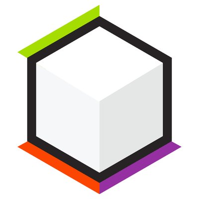

Comment fonctionne
un moteur de rendu web
"du HTML aux pixels"
Meetup Web front/Privacy #1
About your speaker
Autodidacte, Bac L, Ecole d'art
Dans le web depuis Netscape 3, Photoshop 4
Beaucoup de backend, beaucoup de frontend solo ou binôme créa
En éditeurs, SSII ou agences
Ex-formateur intégration front pour DFO internes ou chez clients des agences
Fortes affinités UX/créa dues aux arts & agences
Actuellement Lead R&D @ Sequoiasoft - on recrute PHP JS Java pour la rentrée
About you
Ratio iOS/Android dans la salle ?
Ratio UX UI/DFO/autres champs?
Qui s'est servi d'un navigateur web ce jour ?
Un moteur de rendu n'est pas un navigateur
Mais une suite de composants pour afficher des sites web, ou des applications
- un composant pour charger des ressources réseau de manière intelligente (ou en tout cas, optimisée)
- un composant de règles CSS (ex: matrice de calcul de styles en cascade)
- un composant de dessin qui utilise une libraire graphique (ex: CoreGraphics pour Apple, Cairo GTK pour Linux/Win, ...)
- un composant pour éxécuter du JS (ex: JavaScriptCore/Nitro sous WebKit, V8 sous Blink)
- etc...
- oulala le 1er slide est déjà technique
- défi, parler de moteur de rendu sans ouvrir un seul code source
- ... prenons du recul
Un exemple simple
Présentation du moteur Mercedes AMG F1 W0x
Slide 1 sur 12

Chapitre 1 : architecture du PU, du MGU-H et du MGU-K/KERS dans les homologations FIA
... ou on va plutôt parler du web
What's up, web ?
One moteur to rule them all (?)
Donnons des sous à la fondation Mozilla (en + leur nouveau moteur est top)
Dualité dangereuse de Apple et Google (coups bas via Youtube cf slide suivant)
On rappelle que la plus grosse source de revenus de Moz est Google/Yandex/Baidu
Annonce probable de Huawei à venir
6 moteurs sur le marché
| Moteur | Dans |
|---|---|
| WebKit | Safari/Mail.app, Epiphany (Linux), Samsung, Sony, Nintendo |
| Blink | Chromium/e, Opera, Vivaldi |
| Gecko/Quantum/Servo | Firefox |
| Trident/EdgeHTML | XBOX, IE < 2020 |
Parts de marché
Sur mobile le dominant (95%) est WebKit/Blink. Trident (Windows Phone) est abandonné. FF, Opera Mobile et les navigateurs Symbian Nokia sont des niches.
Sur desktop le % de part de marché est un peu différent : Firefox+IE ont 20% du marché
Ratage complet du mobile par Firefox et IE (les 1ers PDAs étaient pourtant WindowsCE)
Corée du Nord : fork de Gecko, 'Naenara' (Mon Pays) pour visiter des sites réservés 
Un moteur n'est pas un navigateur. Un navigateur se sert d'un moteur.
Airbus et Boeing partagent des moteurs General Electric, Rolls Royce, Trent : ce n'est pas le même avion == pas le même navigateur
Une compagnie peut changer l'intérieur de l'avion (Singapore, Qatar Airlines, Air France = Apple, Google, Samsung, Sony)
Des pilotes connaissant bien le moteur changent de boite : porosité des devs Apple/Google, Samsung/Sony/Nintendo
... Microsoft a récemment choisi de passer sous moteur Blink (qui est le moteur de Chromium)
Microsoft qui lâche EdgeHTML pour Blink
“MS : I very recently worked on the Edge team, and one of the reasons we decided to end EdgeHTML was because Google kept making changes to its sites that broke other browsers, and we couldn't keep up.
For example, they recently added a hidden empty div over YouTube videos that causes our hardware acceleration fast-path to bail (should now be fixed in Win10 Oct update)
Moz : YouTube page load is 5x slower in Firefox and Edge than in Chrome because YouTube's Polymer redesign relies on the deprecated Shadow DOM v0 API only implemented in Chrome”
Youtube + Chrome = pubs = üí∞ üí∞ üí∞
MS a clairement indiqué ne pas vouloir forker Blink et veut réouvrir des API bloquées pour les adblockers (reddit AMA Juin 2019)
Google bashing ?
Chromium n'est pas Chrome. Ni YouTube
Leurs travaux demeurent remarquables (du point de vue DFO & Analytics)
Top ingés Blink ouverts sur twitter (Ylia, Jake, Yoav, Tab) comme les top ingés Moz (Marcos, Lin)
Travaux publics sur Blink très documentés : "Life of a pixel", 2018, 55 slides, pas de Cult of Secret à la Apple/Safari
https://docs.google.com/presentation/d/1boPxbgNrTU0ddsc144rcXayGA_WF53k96imRH8Mp34Y/edit#slide=id.g291e5dcaed_0_0Blink, WebKit hors des navigateurs
Embarqués dans des logiciels assez connus
Players Spotify, Pandora, Mail.app/iWork/iTunes/App Stores
Steam, Battle.net, Kindle Amazon
Sony, Nintendo, Adobe
... de récents commits de Sony, la PS5 se profile
Nintendo Switch hackée à cause d'un vieux WebKit

embarqué dans automobile, smart TVs, kiosques (NetFront) ...
⚙️ Le moteur WebKit & les autres ⚙️
Historique
- 1998 KHTML/KJS issus de Konqueror (KDE, Linux)
- 2001 Apple forke KHTML/KJS en WebKit : WebCore + JavascriptCore. Préféré à Gecko/Netscape
- 2005 Apple open source quelques modifications de code pour Konqueror
- 2007 l'iPhone sort avec Safari 3
- 2008 Google lance Android et Chrome
- 2011 Apple demande à trademarker WebKit, RIM pas trop d'accord
- 2013 Mozilla crée Servo, Google forke WebKit en Blink, Opera abandonne Presto pour Blink, WebKit devient trademark Apple. Blink est un fork technique et business
- 2014/5 Microsoft remplace Trident par EdgeHTML
- 2016/19 CSS4, CSS Houdini, Offline WebApp, WebPayment, WebAssembly, Animations API, ...
- 2020 "Year of Privacy" üîí (ITP toussa)
- https://webkit.org/tracking-prevention-policy/
- https://developer.mozilla.org/en-US/docs/Mozilla/Firefox/Privacy/Storage_access_policy
Les acteurs clé communiquent ouvertement sur l'avenir de leur moteur
oui, pour de vrai, les mentalités ont évolué
- WebKit.org (OSS) : https://webkit.org/blog/ et https://webkit.org/status/
- Blink : https://www.chromestatus.com/features
- Edge : https://developer.microsoft.com/en-us/microsoft-edge/platform/status/
- Safari : https://developer.apple.com/safari/technology-preview/
- nb : Apple ne commentent jamais en _détails_ sur qu'ils vont ajouter pour iOS, les curieux.ses peuvent lire les commits des devs @apple.com https://github.com/WebKit/webkit/commits/master
Contributeurs WebKit (principaux)
git shortlog -e -s -n Apple, Google (avant Blink), webkit.org, Adobe, Igalia, Samsung, Sony, RIM, Nokia, Intel
Blink : Google, Opera, Adobe, Igalia, Samsung, Intel<,/p>
Igalia ? GNOME/Linux, petite équipe de consultants experts et commiters WebKit/Blink/Qt/GTK, pour embarqué (voitures, panneaux pub, bornes, etc.)
ex: ont implémenté CSS Grid dans Webkit+Blink, financés par Bloomberg, qui aime bien les grilles
https://blogs.igalia.com/mrego/2017/03/16/css-grid-layout-is-here-to-stay/ Igalia recrute (La Corogne)Yoav Weiss (<img srcset>)
C'est
Open
Source
Blink, WebKit, Gecko/Servo
Bientôt Huawei via un fork ? ;)
C'est pas /si/ difficile de contribuer (DevTools/Inspector est la porte d'entrée la plus simple)
git clone webkit
https://www.webkit.org/building/checkout.html
8 GB. 35000 tests. Des 100MB de sources C++, 210000 commits. Projet XCode ou Visual Studio
70% des 8GB sont des tests ou ressources de tests (pages HTML, images, vidéos, fichiers JS/CSS)
25 minutes de compile sur un très bon CPU
dedans : WebCore, JavaScriptCore, WebInspectorUI, WTF, MiniBrowser, DumpRenderTree, ...
üîå Une base commune et des ports üîå
Pas un WebKit unique. Un port parle aux APIs natives plateforme (ex: API de rendu, de réseau, ...)
- OSX/iOS port (Safari/Mail/AppStore/iWork + CoreGraphics)
- Android port (Stock browsers/Chromium < Blink + Skia)
- GTK port (Linux Gnome Epiphany browser + Cairo)
- Qt port (Spotify Player < Blink, wkhtml2pdf)
- EFL port par Samsung (Freebox, TizenOS)
- EA : moteur de l'UI de Sim City 2K
- Amazon : le lecteur d'ebook Kindle
- Sony : browser de la PS3/4 et UI console en WebGL
- Nintendo : browsers Wii U et Switch, Nintendo Store
- QNX port (BlackBerry) : Audi, BMW, Ford, Honda, Hyundai, Porsche, Toyota, Volkswagen
Exemple de ports pour le rendu graphique : https://trac.webkit.org/browser/webkit/trunk/Source/WebCore/platform/graphics?order=date&desc=1/
La base commune pour : parsing HTML/CSS/SVG/MathML & styling/layout (WebCore), JS (JavaScriptCore), GraphicsContext (délègue le rendu à un port)
Les ports pour : spécifique OS (pile graphique ou réseau), image decoding, liens hardware (GPU, orientation, geoloc, battery, vibration, touch inputs, senseurs lumière/pression/paiement, ...).
Présence de flags lors du build : #if ENABLE(PLATFORM_IOS)(...)
C'est le même moteur dans des chassis et câbles différents.
C'est pour ça qu'il y a des différences de comportement ou bugs
Graphics Context delegate
WebCore délègue à un contexte graphique (GraphicsContext) pour dessiner : dessine moi un bouton


ü•Ñ Le fork Blink (Google) ü•Ñ
Mi 2013 Google décide de diverger de WebKit (plus précisemment de son WebCore)
Changements de fond liés aux perfs (ex: volonté de multithreading JS et décharge vers GPU), au refus des -prefix CSS, au refus originel du code MathML, à l'arrivée du moderne Servo chez Mozilla
... à la concurrence avec Apple (Google était co contributeur majeur de WebKit)
Le moteur de Chromium/Chrome, Opera, Silk, UI Battle.net, Steam, Spotify post WebKit
Retour à WebKit : WebCore (1)
Les étapes de rendu
mise en 2 arbres du HTML et CSS (parsing)
calcul des styles depuis la cascade CSS (styling)
calcul de la mise en page x/y (layout)
mise en calques de la mise en page et dessin (painting/compositing)
post-dessin, le JS peut altérer les 2 arbres (JavascriptCore)

Retour à WebKit : WebCore (2)
Pour réseau, HTML, CSS, SVG, MathML, Canvas
rappel : HTMLDocument != SVGDocument. HTML != MathML
Fait le parsing aidé par un preload scanner, le styling le layout et le dessin (mais pas le café).
Le layout c'est le calcul de la position et taille d'un élément (une boite rectangulaire). Un parent doit layout() ses enfants pour connaître sa propre hauteur/largeur : récursivité
Un layout au final c'est juste des boites dans des boites, une mise en page
Les boites sont mises en calques puis dessinées et paintes
Pour savoir comment placer les boites et les dessiner, le moteur ne fait que suivre les specs.
üìö Specs ? üìö
Une spécification n'est qu'un document (HTML) avec des schémas (WebIDL) qui décrit comment faire les choses
Rédaction collaborative, elles sont sous github
Outil simple open source de rédaction de specs : ReSpec outil du W3C : https://github.com/w3c/respec . C'est 'juste' un peu de JS et CSS dans une page HTML
Outil méconnu mais excellent pour toute rédaction de document technique, pas seulement pour des specs web (vs Word/LaTeX)
Fonctions natives de statut de document (draft, preview, final), auteurs, contributeurs, risques, privacy, vocabulaire clair (it MUST, it MAY, it SHOULD, ...)
Les voir comme un super Wikipedia du web
Spec exemple : Web Auth
Specs de base : le box model, les 3 flows, le visual formatting model
La peinture par specs existe aussi dans l'art/psycho : Klein, Paint by numbers (revoir Will Hunting)
Sans oublier le pixel / ASCII art
Spec #1 : Le Box Model

http://en.wikipedia.org/wiki/Internet_Explorer_box_model_bug
probablement la spec la plus connue, le rectangle est visible dans un inspecteur, fourni par WebKit
langage commun entre créas et devs
"tu as mis 1px de trop sur la marge gauche"
responsive Bootstrap = 12 box float puis flexbox
Spec #2 : les 3 flows : normal (block, inline, relative pos), float, absolute pos
http://www.w3.org/TR/CSS2/visuren.html#positioning-scheme
Le HTML est un flux d'éléments (flow)

- normal : Les blocks s'empilent (p, div). Les inline sont une ligne, qui wrappe (a, span, image*, table)
- float: né dans le normal flow, puis sorti et flotte à left ou right
- absolute: né en dehors du normal flow : pas d'impact sur ses siblings (!float), né au x,y du containing block (parent significatif)
block element, inline element... et replaced element : un element dont le rendu est non spécifié par CSS (image, form control, iframe, applet, object ActiveX/Flash), il est inline par défaut
When an object is absolute/fixed positioned, it becomes block-level. Even if the CSS display type is set to inline (or inline-block/table), the effective display type becomes block-level once an object is positioned.
Visual formatting model, en détails
http://www.w3.org/TR/CSS2/visuren.html
http://www.w3.org/TR/CSS2/visudet.html
specs dures, doliprane et crayon requis
pour briller en soirée
pour postuler chez un fabricant de navigateur
pour des interviews front
Un cas industriel & créa particulier
Les specs sont publiques
Nimporte qui peut y contribuer
Les fabricants/individuels implémentent (ou non) les specs selon leur propre roadmap
Les specs sont une prédiction de ce qui va arriver dans les navigateurs et WebViews pour app natives
Suivre twitter "Intent to ship" https://twitter.com/intenttoship pour savoir quand ça va arriver sous FF ou Chrome
Suivre les commits WebKit pour savoir quand ça va arriver sous Safari
Quelques travaux en cours
Très publics : https://docs.google.com/spreadsheets/d/1pvXEMD5pRioognaqEzglS-4ZBSQ_YmzL8Fiz7yt4Bb4/edit#gid=0CSS Houdini (accès direct au moteur CSS)
Web Share API (linkedin, insta,...)
Shape Detection API (code barre, visage, texte)
SMS Receiver API, Contact API (!)
Payment API (GooglePay, ApplePay dans le browser)
PWA acceptées dans les App Stores
Media Queries dark/light modes (iOS13, Android Q)
SVG dans les favicon (!)
<img loading> above the fold pour charger que si on scrolle
remplacement de <iframe> par <portal> (Google I/O 2019)
iPadOS (écran déporté/divisé)
Voir les travaux
Activer les 'expermimentals features'

Du HTML brut aux boites
Tu tapes une URL et tu fais entrée : welcome to WebCore
Il faut d'abord charger le HTML (HTMLDocument) du cache ou du réseau
Caractère par caractère : le Parsing = mise en Tokens (commentaires, start/end balises, doctype, langue, cdata)
Tokens
Pour découvrir les éléments

Les ressources de la page
En général dans une page on a besoin de ressources (images, scripts, CSS pour le style, vidéo)
On charge toutes les ressources une par une ?
Non, on les précharge en parallèle (20% à 30% + rapide)
avec des Preload Scanners
nb : preload != async
Ami(e)s créas restez avec nous
Une petite plongée dans le code de WebKit
Scanners Réseau, Parsing en Tokens (= caractères clef, ex = <div>, <head>, <svg>), Arbres HTML et CSS, Rectangles, Styles et Renderers
Création d'un arbre de renderers (= "afficheurs"), produisant des rectangles poupées russes, rangés en calques
Puis peinture de ces calques
TODO Montrer le code XCode ?
Les 2 Preload Scanners (... IE8 !)
HTMLPreloadScanner et CSSPreloadScanner
Le chargement du HTML est bloquant sur chargement de script JS et CSS externe
Parce que le JS éxécuté peut modifier le DOM et son style CSSOM (appendChild, display:), ou avoir besoin de CSS chargée
Un preload scanner est un chargeur ressources réseau en parallèle, il permet de libérer le moteur pour faire autre chose (construire un arbre au lieu de télécharger une image, éxécuter du JS).
HTMLPreloadScanner : <script>, <img>, <input type image>, <link rel ext>, <poster>, <picture>, <meta>
CSSPreloadScanner : règle @import (oui, seulement)
HTMLPreloadScanner intelligent : ex: chargera la meilleure image responsive/retina selon MQ (ex: dark mode)
Le CSSPreloadScanner ne précharge que les CSS @import, pourquoi pas ses images/fonts ?
- background-image ? il faudrait pas charger une url() inutile via une MQ mais le scanner n'est pas un parseur CSS
- bg image responsive/retina ? scanner != parseur, impossible d'évaluer une MQ (width,dpx), alors <img srcset> a été créé (pour HTMLPreloadScanner)
- fontes ? compliqué, il faudrait les charger que si elles seront utilisées dans le style, mais impossible de preloader : le style n'est pas encore connu
donc : préférez <img>/<picture>/<link rel preload> à <div + css img> (+ semantic first !)
donc : utilisez GWF et avec un subset si possible
sBlink : multi-threaded PreloadScanner architecture pour pas utiliser la main thread de HTMLPreloadScanner (par ex pour évaluer MQ à part)
DONE https://codereview.chromium.org/201813002/Pourquoi ne pas 'simplement' multithreader ? Les CPU mobiles ont plusieurs cores après tout
tl;dr : parce que c'est -vraiment- compliqué
un JS qui mine des bitcoins 'paralyse' le CPU qui a d'autres trucs à faire (styler, dessiner, peindre, animer)
un preload scanner est une réponse simple pour donner un peu plus de perfs
pour plus : des workers JS en tâche de fond, des envois directs au GPU pour libérer le CPU, une refonte totale du code de rendu
ça tombe bien c'est exactement ce sur quoi Blink (LayoutNG)/Servo (WebRender) bossent en ce moment
Apple A12 6xCPU+4xGPU, 7 miliards de transistors dans < 1cm2. Respects

Pour plus de performance réseau
Revoir le talk HTTP2 @ Sunnytech 2018
tl;dr : un seul tuyau réseau pour précharger toutes les ressources au lieu de petits tuyaux multiples
utile pour les mauvaises connexions réseau
pause chocolatine
on va voir quelques morceaux de code
Parsing (HTML/CSS) puis Layout (mise en rectangles)
Le HTML tokenizé est mis en arbre (DOM Tree) d'HTMLElement, la CSS en Style Rules
Le moteur nettoie ce qu'il peut (ici tes balises mal fermées) et recoud le wrap (splitflow RenderInline.cpp).Matrice DOM Tree + Style Rules = RenderTree
Ce tree est un arbre de Renderers (RenderObject)
Chaque HTMLElement a une méthode pour s'attacher un Renderer en fonction de son display : le renderer calcule un RenderStyle (Recalculate style) et est rangé dans un RenderLayer (clip,mask,overflow) rangé par z-index relatif
(RenderElement.cpp)ex de display: block, inline, table, column, flex, grid, ...
Renderers de base sous RenderFlow : RenderBlock, RenderInline et RenderText
RenderFlexibleBox, RenderGrid, RenderListItem, RenderSlider, RenderTable, ...
Tous les élements ne sont pas rendus : head (meta, script, link), display:none
Certains élements ont plusieurs renderers : select (boite, drop, bouton). Le Shadow DOM est né ici
Le RenderStyle est calculé avec parsing de selectors et cascades. Optimisez vos CSS pour accélérer !
Au layout(), les renderers du tree produisent un rectangle (un LayoutRect suivant le Box Model) avec des coordonnées xy (void RenderBox::layout())
Rectangles dans des rectangles : le layout

pause


Géométrie (layout propre/sale) et paint
Rappel : tous les renderers ont une méthode layout() recursive : le renderer du parent significatif (le containing block) layout() ses enfants
Dirty bit : si un nouveau renderer rentre dans l'arbre, s'il est dirty (layoutIfNeeded), il informe son parent significatif dit containing block (A renderer’s containing block is an ancestor block of the renderer that is responsible for determining that renderer’s position.).
Le containing block se nettoie (layout) jusqu'à ne plus avoir d'enfants dirties. Quand il est propre on peut le dessiner
Le containing block a aussi un containing block (parent a un parent). C'est un arbre
Le renderer peut déborder le rectangle du containing : c'est l'overflow
Déterminer le containing block
Rappel : c'est le block clé qui layout() ses enfants : c'est le parent significatif
http://www.w3.org/TR/CSS21/visuren.html#containing-block.
Par défaut c'est le root element (= RenderView : ce qu'on voit à l'écran, à x=0,y=0, le haut à gauche de l'écran)
La position: du rectangle enfant est relative à celle du containingBlock
ex : relative ou static (= default) : containingBlock = l'ancêtre block le plus proche
ex : fixed : containingBlock = RenderView = l'écran. RenderView réajuste les coordonnées du fixed selon le scroll (il re-fixe au bon endroit)
ex : absolute : containingBlock = ancêtre le plus proche avec position absolute/relative/fixed ou transform, si aucun, alors RenderView (donc x=0,y=0)
Ce qui coûte le plus cher au moteur
Recalculer les styles et le layout
Lutter avec un HTML surchargé de balises inutiles et styles CSS YOLO
Le JS qui déclenche des recalculs de layout (ex: worst case, au touch scroll, 60 fois/seconde)
Exercice formateur : faire un site avec le moins de balises possibles et le moins de JS possible
Exercice UX/DFO avancé : repérer tous les recalculs de layout inutiles
N'optimisez que ce que vous pouvez mesurer : utilisez la Timeline de DevTools pour voir le réseau, le layout et le dessin
On ne relayout pas tout. Seulement les containing blocks avec dirties (sales gosses)
Le layout n'est pas figé : au 'hit testing' (où et sur quoi est le pointeur) un survol :hover, un focus, un touch JS peut relayouter.
Le RenderStyle recalculé ne change pas toujours le layout : color non, position/display/height/width oui.
http://gent.ilcore.com/2011/03/how-not-to-trigger-layout-in-webkit.htmlSavoir minimiser le layout = perfs ! (une des raisons du fork Blink : éxécuter le JS en // du layout)
Savoir profiter du cache et du preload scanner = more perfs !
Savoir minimiser le dessin/peinture à venir = godlike, jedi
Mettre du translateZ/3D partout pour "accélérer le rendu" : sith lord. Savez-vous ce que ça fait vraiment ?
... des questions à poser en recrutement DFO, avant Angular/React
Fini de layouter
Le moteur a calculé les coordonnées x, y des rectangles : on a enfin une mise en page
En HTML on dessine des rectangles, qui peuvent être clippés ou croisés (mask, shape, overflow:hidden)
En SVG on aurait dessiné des paths, circles, ...
En MathML on aurait dessiné des vecteurs, racines, fractions, ...
En Canvas/WebGL on aurait dessiné sur des surfaces 2D ou 3D avec sources de lumières et angles de caméra, ...
Le moteur envoie tout le calculé vers des calques (coucou Photoshop)
Le RenderTree est LayoutRecté et ses rectangles rangés en RenderLayer (calques)
utilitaires DumpRenderTree/DumpRenderLayer dans Safari
Le layer est ensuite Painté via le GraphicsContext (ex: CoreGraphics, rappel des boutons, ici look natif)
ex: un overflow:hidden (rectangle qui déborde du containing) c'est un layer clippé
ex: une reflection c'est un layer cloné à l'envers
ex: un transform3d c'est un layer devenu une texture GL, son intersection crée des sous textures
ex: une shape/mask c'est un layer clippé, un filter c'est un layer mélangé (multiply,blur,...)
Un calque peut être backé par GPU pour optimiser (accélération carte graphique : ex : les ombres, opacités, flou, projections spatiales)
Super, on a un Layout non dirty qui nous a donné des calques
On peut (enfin) dessiner / paint nos RenderLayers!
Pause : plus besoin de penser box model, containing block, les styles sont calculés (cascades appliquées), le layout (padding, margin, border, width, height) a été fait et mis en layers
Pour chaque layer, la spec CSS nous dit exactement quoi peindre dans quel ordre
La peinture suit les specs, comme le layout : 9 étapes
üé® 9 Etapes de peinture üé®
Where the magic happens. With specs
On ne peint pas élément par élément au feeling, pour éviter bavures
On peint des CSS stacking contexts (piles), en suivant un ordre précis et pas celui du HTML (!=couches)
Les piles sont étanches entre elles (sinon ça coule, comme de la... peinture)
Un stacking context est formé par élément qui est: racine, positioné, region, flex, grid item, table, float
Un stacking context peut avoir des enfants avec stacking contexts (un enfant position:absolute/relatif suffit à créer un nouveau sc)
Un stacking context n'est pas juste le z-index : le zi est relatif au context
Oh non, encore des specs !
On peint récursif par stacking context et pas par l'ordre du HTML- on peint background (color/img/col/row/cell/region/grid-item), borders de l'element
- on peint dans l'ordre du flow : enfants positionnés en zindex < 0
- on peint dans l'ordre du flow : les blocks non inline, non positionnés
- on peint dans l'ordre du flow : les floats non positionnés
- on peint dans l'ordre du flow : les inlines non positionnés, tables et inline blocks
- on peint le sc de l'enfant non positionné puis positionné à zindex: 0 (= fixed)
- on peint le sc de l'enfant opacity < 1 (cf filtre photoshop)
- on peint le sc de l'enfant avec CSS transform/filter (idem)
- on peint le sc de l'enfant positionné zindex > 0 (cf calque photoshop)
This painting order is applied recursively to each stacking context.
Les enfants positionnés forment un stacking context enfant du stacking context parent
Le z-index n'est pas un onion global, il est relatif aux éléments du même stacking context. ex : div rouge et fixed
c'est pour ça que opacity < 1 affecte le rendu z-index : elle est peinte avant le >0
donc : touchez au z-index avec précaution, même si la réponse est dans la spec
Aspirine ? et j'ai même pas parlé de flexbox, region, grid ou column
Most elements on a page are in a single, root stacking context, but absolutely or relatively positioned elements with non-auto z-index values form their own stacking contexts (that is, all of their children will be z-ordered within the parent and not be interleaved with content from outside the parent
Flex items paint exactly the same as block-level elements in the normal flow, except that ‘z-index’ values other than ‘auto’ create a stacking context even if ‘position’ is ‘static’. Descendants that are positioned outside a flex item still participate in any stacking context established by the flex item.
All column boxes in a multi-column element are in the same stacking context and the drawing order of their contents is as specified in CSS 2.1. Column boxes do not establish new stacking contexts.
Ce que translate3d(0,0,0) et translateZ(0) font vraiment
Activent le Compositing d'un RenderLayer (crée une texture) et lui donnent un "backing context"
en français : prennent un chemin hardware vers la puce graphique au lieu d'un chemin logiciel
Pas seuls à faire ça : CSS transform 3d, filter, opacity ou perspective, video, canvas, flash, auto au dessus d'un composité ou avec un enfant composité
Oui ça booste le rendu grâce au GPU, mais ça fait beaucoup de textures pour peu de VRAM
Envoyer du CPU au GPU a un coût, ça génère des clignotements
10 frames de color qui changent en JS : 10 textures (demo)
To minimize the amount of texture uploads, you can only animate or transition the following properties: opacity, transform, and filter
CSS : propriétés CSS will-change et will-animate pour les fous
GPU : gros travaux chez Mozilla
WebRender : nouveau moteur de dessin de Servo (= moteur expérimental de Firefox, moderne, Rust - hi François, Quentin)
WR convertit les rectangles en matrice de triangles et balance TOUT* vers le GPU
Beaucoup plus rapide. CPU : 8/12 cores, GPU : des centaines
*Seules les fontes sont encore traitées par le CPU car un peu floues en GPU et ligatures fines difficiles (arabe, chinois, ...)
TODO lien article Lin